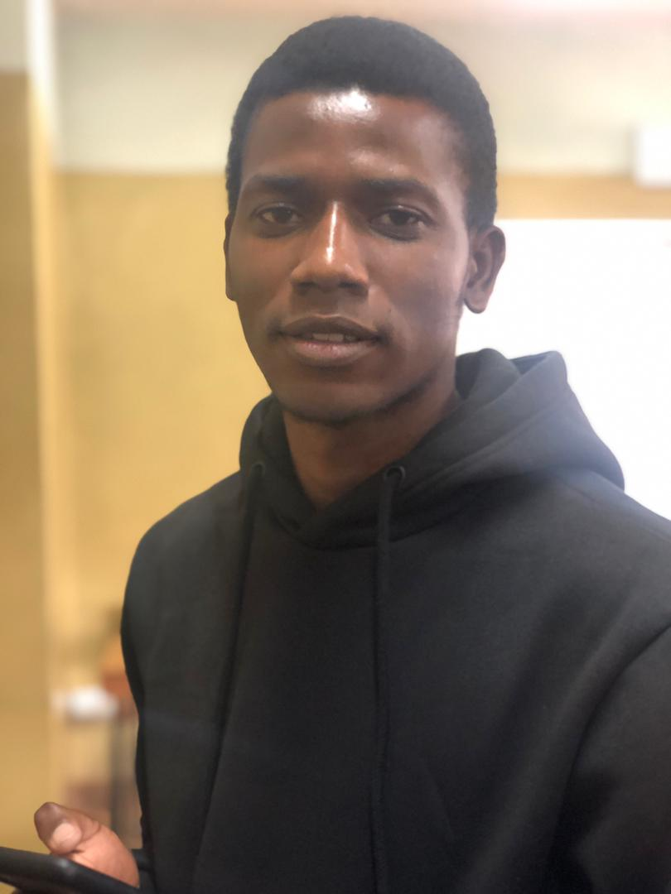

Kudzai Sithole

Summary
Hellow Internet! Welcome to my web
page and i started web development as a hobby and it still
is and i do every project for fun even if there is some form
of compensation that being said i do take every project seriously
Work Experience
- Internship: TelOne (Pvt) ltd 2019-2020
- Responsible for new user installations and configurations
- Monitoring the power levels of the network elements
- Maintenance of the backbone network
- Repairing computer hardware and telephones
- Network expansions, camera installations
- Installation of company essential software
- Maintenance of the access network and customer installations
- Graduate Trainee: TelOne (Pvt) ltd 2022-2024
- Implementation
- Internet and Data Planning
- Access Network Planning
- Research and Development
- Transmission Planning
Skills
- Critical thinking
- Web development
- Network Design
- Fibre Splicing
Contact Me
My hobbies